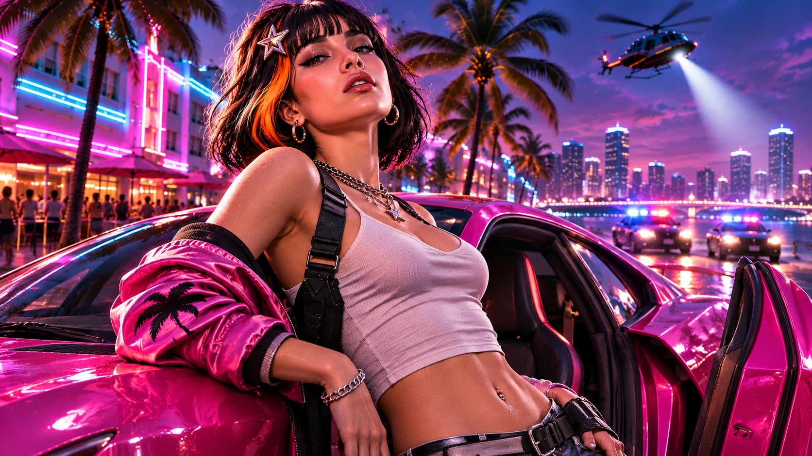
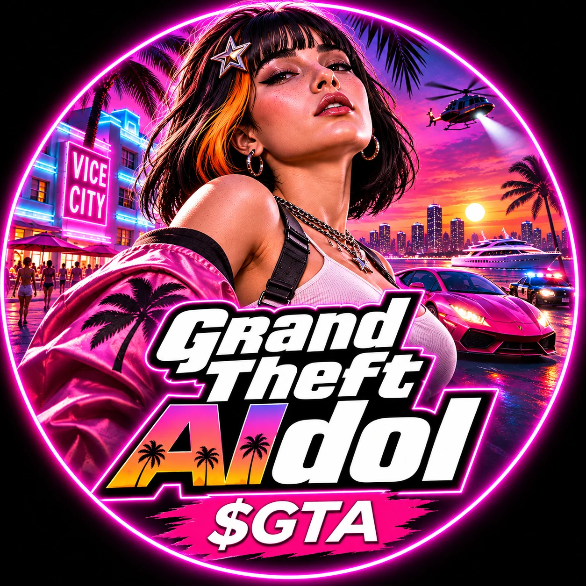
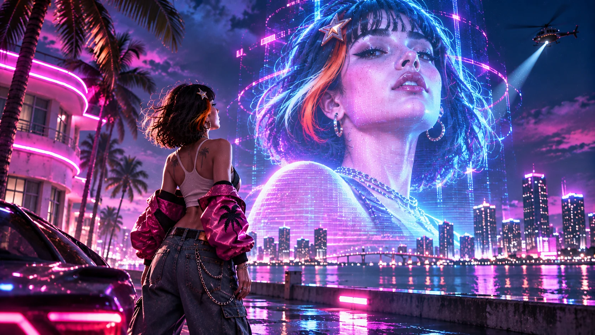
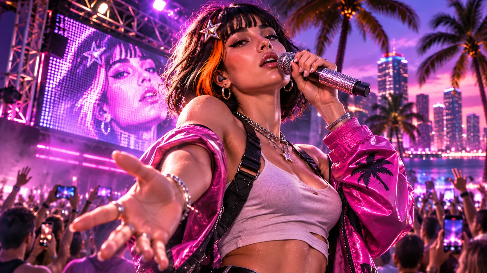
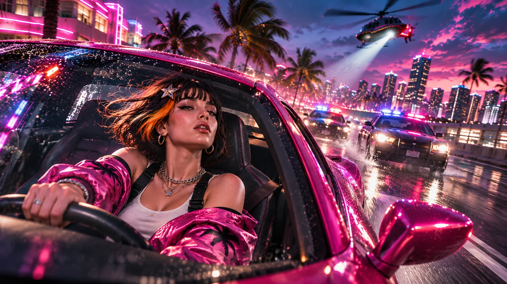
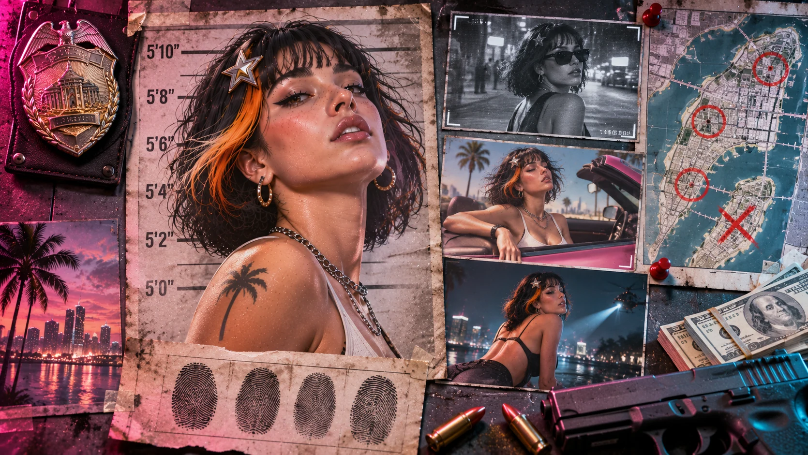
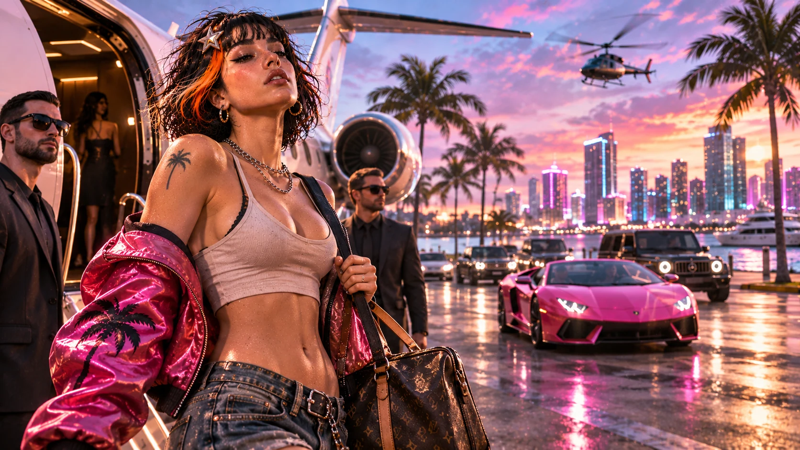
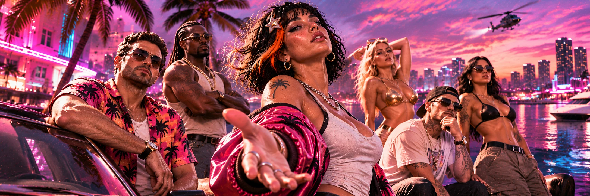

File / 01
The arrival
New city. Same main character.
The boulevard is her runway.

Grand TheftAIdolAn AI idol. A city full of neon.
Meet Claudia: the digital diva bringing neon, noise, and main-character energy to a Vice City-inspired world.
One digital star
Claudia started as an AI idol. Now she’s stepping into a world of neon boulevards, fast cars, and unforgettable nights. One digital star. One very loud entrance.
From the screen to the streets
From a waterfront arrival to the stage lights and a five-star escape: Claudia was never going to make a quiet entrance.

The boulevard is her runway.

A digital voice. A real spectacle.

The show doesn’t stop when the sirens start.

CASE NO. 001Name: Claudia. Known for turning every screen into a stage and every arrival into an event.
The $GTA rap sheet
The essential details, all in one place.
The digital diva
Claudia isn’t here for a background role. Give her a microphone, a neon skyline, and an audience, and the night becomes her stage.
Follow her story →Pick a chapter and follow Claudia’s fictional journey through the city.

The jet lands, the cameras turn, and Claudia makes her first entrance into the city.
These chapters are a fictional story. They are not a playable game, a roadmap, or promised milestones.
Neon streets, rooftop views, and nights worth remembering. Step inside Claudia’s world.

06 / The crew
Follow Claudia’s story and connect with the people bringing the Grand Theft AIdol world to life.